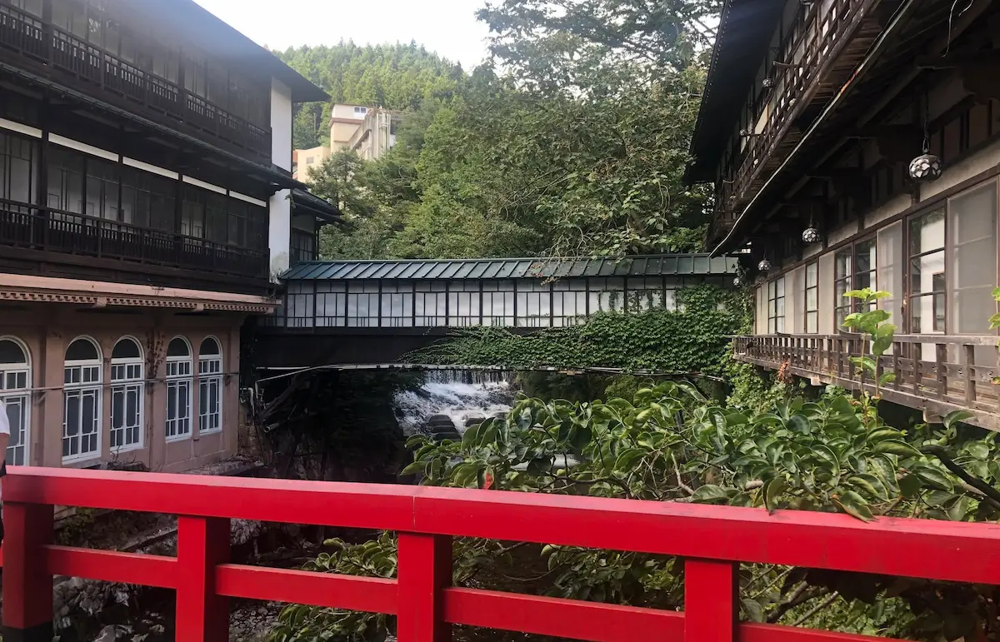
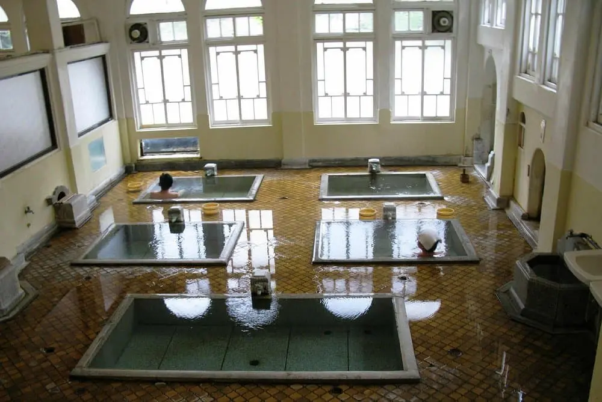
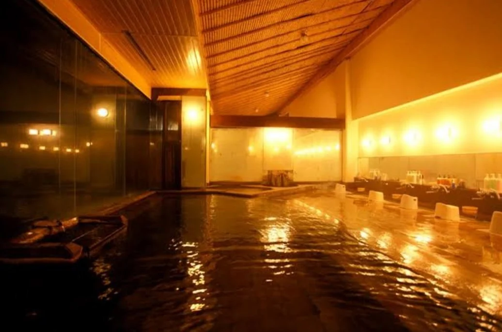
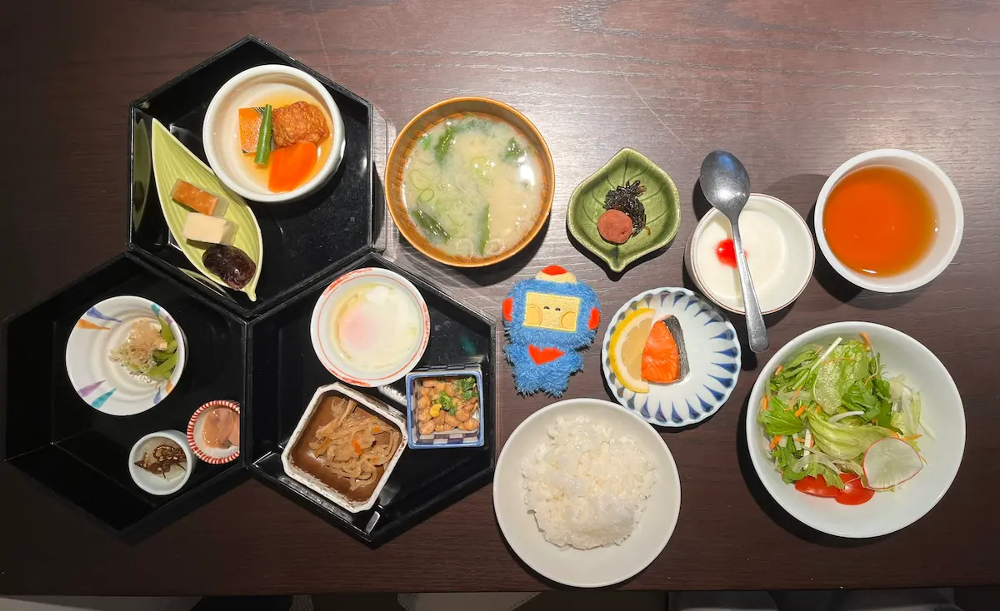
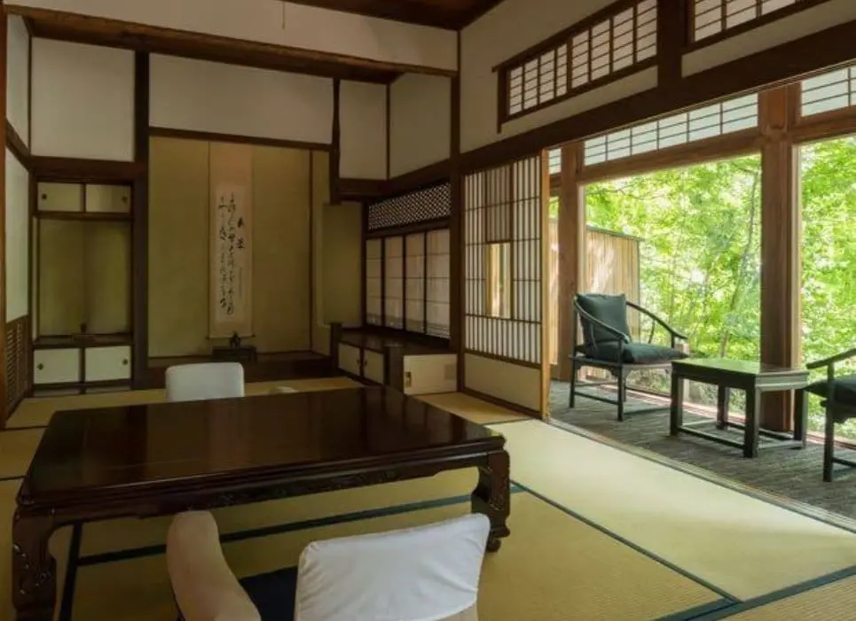
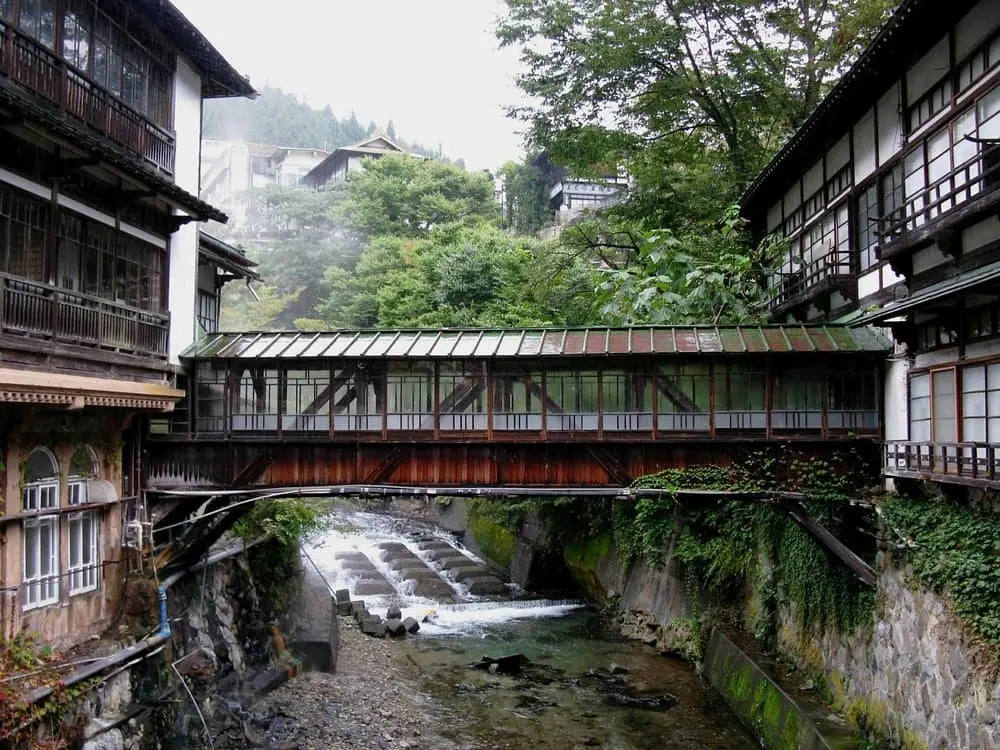
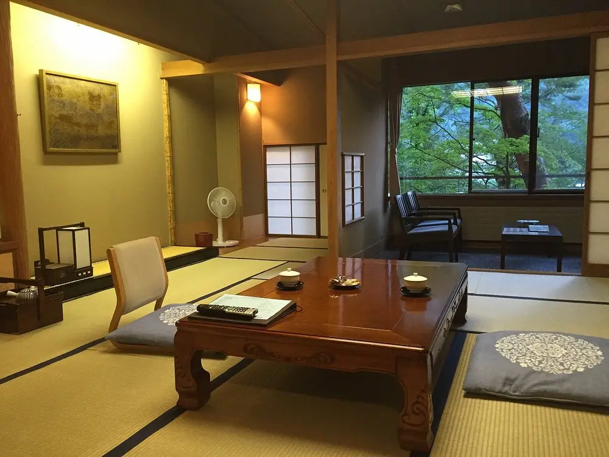
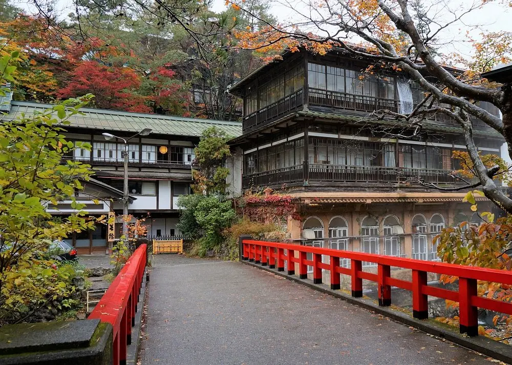

There is a moment — and every pilgrim who has stood on the red bridge at Sekizenkan knows it — when the line between a movie and reality simply disappears. The lanterns are lit. Steam rises from the baths below. The wooden building, three centuries old, glows amber against the dark mountain valley. And every frame of Hayao Miyazaki's Spirited Away floods back at once.
This is not a hotel inspired by Spirited Away. This is the hotel that inspired Spirited Away.
Japan's Oldest Inn, and the Story Behind the Story
Sekizenkan was built in 1691 in the mountain hot spring town of Shima Onsen, deep in Gunma Prefecture. For over 330 years, it has operated without interruption — surviving wars, earthquakes, and the relentless passage of time — making it the oldest continuously operating ryokan in Japan. The main building, Zanshinrou, is a registered National Tangible Cultural Property.

When Miyazaki and his team at Studio Ghibli were developing the visual world of Spirited Away, they drew directly from the architecture and atmosphere of places like Sekizenkan. The arched red bridge at the entrance — now one of the most photographed spots in all of anime tourism — is the template for the bridge Chihiro crosses into the spirit world. The main bathhouse building, with its stacked wooden floors, paper lanterns, and steaming baths visible from every corridor, became Yubaba's magnificent establishment.
The similarity is not coincidental. It is devotion, captured in hand-drawn frames.
The Architecture: Where the Past Lives
Sekizenkan occupies three interconnected buildings across different eras of Japanese architecture. The original 1691 Honkan is the jewel — its narrow corridors, low ceilings, and the faint smell of aged hinoki wood create a sensory experience that no modern hotel can replicate. The Sanso building, added in 1936, introduces a grander scale with ornate woodwork and a ceremonial entry hall. The Kawabata wing, completed in 1971, adds more rooms while maintaining the design language of its predecessors.

The baths are the soul of the experience. The onsen waters at Shima are sodium chloride springs — clear, warming, and reputed since the Edo period to heal exhausted travelers. Sekizenkan has four distinct bathing areas: the Roman-style bath (a beautiful anachronism from the 1930s renovation), the open-air rotenburo overlooking the mountain river, and two indoor baths fed directly from the source. Guests rotate through them across the course of their stay, each offering a different relationship with the water and the building surrounding it.
The Pilgrimage Experience: What Fans Come For
The red bridge — officially called the Taiko-bashi — is the beginning and end of every Sekizenkan pilgrimage. It curves across the Nakatsu River and delivers you to the entrance of the Honkan with a theatrical inevitability. At night, the lanterns reflecting in the water below create the precise image that appears in the opening minutes of Spirited Away. Bring a camera. Bring someone who understands why you are standing very still and not speaking.
Inside, the connection to the film deepens. The stairways are steep and narrow in the way that old Japanese buildings are — you half-expect to turn a corner and find Kamaji the boiler man feeding his coal furnace. The wooden floors creak with the authority of three centuries. The staff move through the corridors in yukata, carrying trays with practiced silence. It is impossible not to feel that the normal world is somewhere very far away.
A Night at Sekizenkan: What to Expect
Stays are structured in the traditional ryokan manner, which means a full-board kaiseki experience: dinner served in your room or the communal dining hall, featuring local mountain vegetables, fresh river fish from the Nakatsu, and seasonal preparations that change with the prefecture's rhythms. The ryokan also provides yukata and tabi socks for guests to wear throughout the property — in the baths, at dinner, and on the bridge at night.
Practical Information
- Check-in: 3:00 PM Check-out: 10:00 AM
- Meals: Dinner and breakfast included in most plans
- Baths: Open to guests 24 hours (except cleaning hours)
- Best time to visit: Autumn foliage (Oct–Nov) and winter snow (Jan–Feb)
- From Tokyo: ~2.5 hours — Joetsu/Hokuriku Shinkansen to Takasaki → Agatsuma Line to Nakanojo → local bus ~40 min
- Language: Limited English; staff are accommodating to international guests
- Dress code: Yukata provided; wear it everywhere on the property
Getting There: The Journey Is Part of It
Reaching Shima Onsen requires intention — and that is precisely right. From Tokyo, take the Joetsu or Hokuriku Shinkansen to Takasaki, then transfer to the Agatsuma Line to Nakanojo, then board the local bus that winds up into the mountains for about 40 minutes. The valley narrows as you ascend. The towns thin out. By the time the bus deposits you at Shima Onsen, you understand why this place has existed for 1,300 years: it is hidden enough from the ordinary world to feel like a different dimension entirely.
Some visitors choose to hire a taxi from Nakanojo station, which takes about 30 minutes and removes the waiting time. Either way, budget for an early arrival — you will want the full afternoon to settle in before the evening bath and dinner ritual begins.
Why This Matters Beyond the Movie
It would be reductive to visit Sekizenkan only as a Spirited Away location. The ryokan is a living museum of Japanese hospitality culture — the concept of omotenashi, or selfless service, is practiced here in its most complete form. The building is genuinely, historically significant. The water is genuinely healing. The silence of a mountain valley at 11 PM, with only the sound of the river and the distant percussion of a taiko drum from a neighboring inn, is genuinely unlike anywhere else on Earth.
The Ghibli connection is what brings many people here. But Sekizenkan is what keeps those people very, very quiet — standing on that bridge, not wanting to go inside, not wanting the moment to end.
| Location | 4236 Shima, Nakanojo, Agatsuma District, Gunma Prefecture |
| Category | Traditional Ryokan (Hot Spring Inn) |
| Anime Connection | Spirited Away (Sen to Chihiro no Kamikakushi, 2001) |
| Built | 1691 — Japan's oldest operating ryokan |
| Price Range | ¥20,000–¥45,000 per person per night (dinner + breakfast) |
| Best Rooms | Honkan river-view rooms (direct view of red bridge) |
| Hot Springs | Sodium chloride spring — 4 bathing areas |
| Nearest Station | Nakanojo Station (Agatsuma Line) — ~40 min by bus · Transfer at Takasaki (Shinkansen) |
Photo Gallery

Photo 1
Photo 2
Photo 3'">
Photo 4'">
Photo 5'">
Photo 6'">Ready to Cross the Red Bridge?
Check availability and book your stay at Sekizenkan Ryokan through our trusted partner.